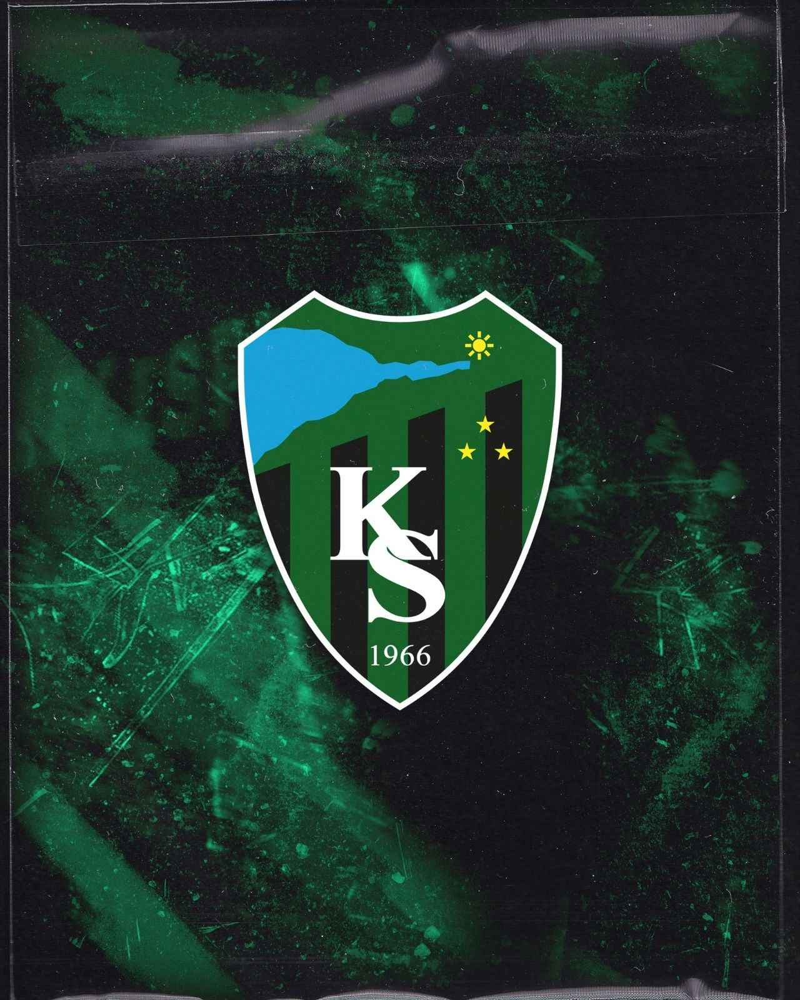
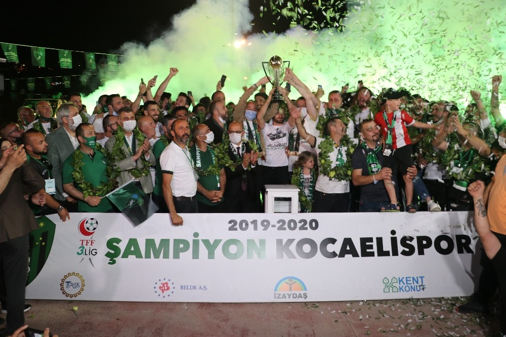

Kocaelispor
Dipten Zirveye: Efsanenin Yolculuğu
Kulüp Tarihi
Kocaelispor, 24 Nisan 1966 tarihinde Baçspor, İzmit Gençlikspor ve Doğanspor'un birleşmesiyle kuruldu. Yeşil-Siyahlı ekip, Türk futboluna kazandırdığı sayısız yıldızla "Anadolu Güneşi" lakabını almıştır.
Başarılar
- Türkiye Kupası Şampiyonu: 1996-1997 ve 2001-2002
- Avrupa Arenası: UEFA Kupa Galipleri Kupası ve İntertoto Kupası mücadeleleri
- 1. Lig Şampiyonlukları: Birçok kez zirveye çıkarak Süper Lig'e yükselme başarısı
Dipten Zirveye Yolculuk
2014: Bölgesel Amatör Lig'e kadar düşen efsane, taraftarının "Sevdanın Ligi Olmaz" pankartıyla küllerinden doğdu.
2024-2025: Ve büyük geri dönüş! Kocaelispor 16 yıl aradan sonra yeniden hak ettiği yer olan Süper Lig'e yükseldi.
